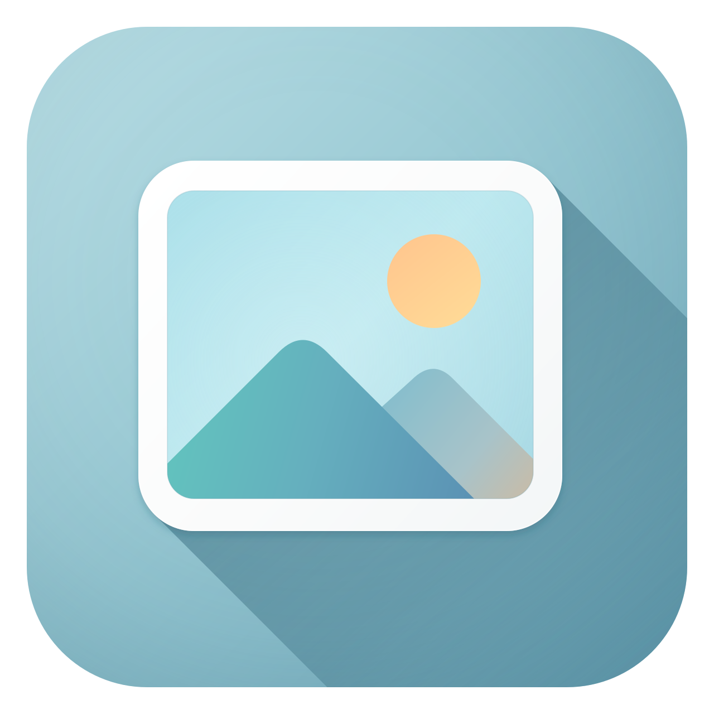

<!doctype html><html lang="zh-CN"><meta charset="utf-8"><meta name="viewport" content="width=device-width,initial-scale=1"><title>LumaCraft 应用图标 · 矢量重绘</title><style>body{margin:0;background:#f0f5f5;color:#30484b;font:14px/1.7 "Segoe UI","Microsoft YaHei",sans-serif;padding:32px}main{max-width:1100px;margin:auto}h1{font-size:24px;font-weight:500}p{color:#73888b}.grid{display:grid;grid-template-columns:1.2fr 1fr;gap:40px;align-items:center}.hero{width:100%;max-width:600px}.sample{display:flex;gap:20px;align-items:center;min-height:128px;padding:20px;margin:20px 0;background:#e0e9eb;border-radius:14px}.dark{background:#262523}.sample img{flex:none}a{color:#27667b;margin-right:20px}@media(max-width:750px){.grid{grid-template-columns:1fr}}</style><main><h1>LumaCraft · 应用图标矢量重绘</h1><p>青蓝色背景 · 平滑晕影 · 白色画框 · 渐变山形 · 长阴影</p><div class="grid"><section><p>96 / 48 / 32 / 16 px 实际尺寸</p><div class="sample"></div><div class="sample dark"></div><a href="lumacraft-icon.svg">SVG 源图</a><a href="lumacraft.ico">Windows ICO</a></section></div></main></html>
